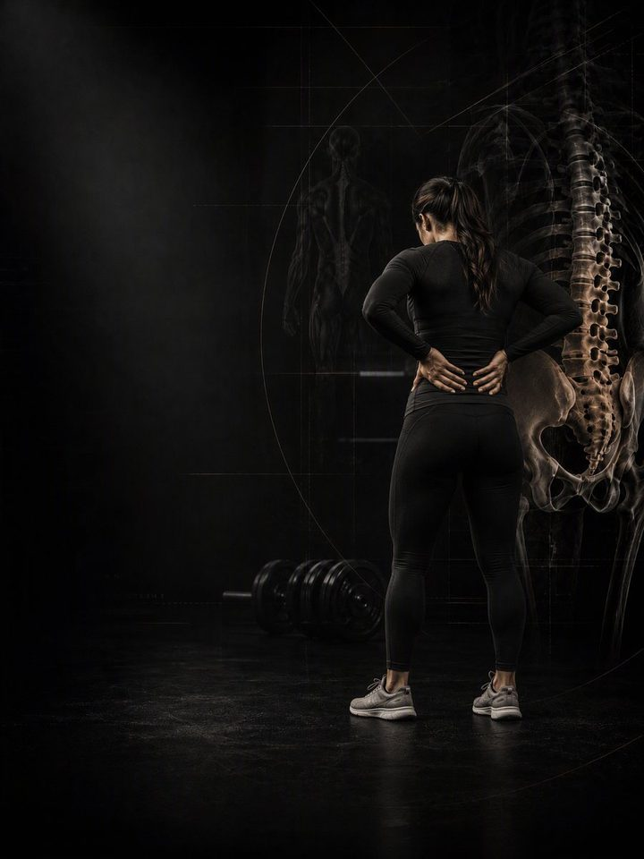

آلام أسفل الظهر
خفّف الأعراض، واستعِد تثبيت الجذع، وأعِد بناء قوة الورك والجذع التي تحمي العمود الفقري.
- مناسب لـكل من لديه ألم متكرر في أسفل الظهر غير محدّد السبب ويريد الاستمرار في التمرين
- الجدولروتين يومي مدته 10–15 دقيقة، و3 أيام قوة في الأسبوع
- المعداتالروتين اليومي يحتاج إلى سجادة وشريط مطاطي. أيام القوة تحتاج إلى نادٍ متكامل.
- الصيغةملف PDF للهاتف، وكل تمرين مرتبط بفيديو توضيحي
لماذا يعود ألم أسفل الظهر مرة بعد مرة
تتحسّن معظم آلام أسفل الظهر غير محدّدة السبب بالحركة لا بالراحة. وهي تعود في الغالب إلى معادلة واحدة: الحمل على العمود الفقري تجاوز ما كان مستعدًا له. والسبب ليس أن العمود الفقري هشّ، بل أن البُنى المحيطة به توقّفت عن أداء نصيبها.
أقوى وقاية من عودة الألم جذعٌ يُحسن التثبيت، ووركان ينثنيان ويدوران ويحملان الأوزان دون أن ينقلا الضغط إلى أسفل الظهر. يدرّب هذا البرنامج الجانبين معًا: تمارين حركة يومية لتخفيف التيبّس والأعراض، وتقوية منظّمة لبناء قدرة تدوم. لا تحتاج إلى التوقّف عن التمرين، بل إلى التمرين بهدف واضح.
أسبوعك
روتين يومي قصير، وثلاثة أيام قوة في النادي. أي ثلاثة أيام تصلح، ما دامت غير متتالية. هذا مثال واحد:
| الأحد | الاثنين | الثلاثاء | الأربعاء | الخميس | الجمعة | السبت |
|---|---|---|---|---|---|---|
| اليوم 1 + الروتين اليومي | الروتين اليومي | اليوم 2 + الروتين اليومي | الروتين اليومي | اليوم 3 + الروتين اليومي | الروتين اليومي | الروتين اليومي |
كيف يسير البرنامج:
- الاختبار أولًا. أربعة اختبارات أولية قبل الأسبوع 1، تُعاد بعد الأسبوعين 3 و6. التقدّم يُقاس، لا يُخمَّن.
- الروتين اليومي، 10–15 دقيقة. كل يوم، ويُفضَّل في الصباح بعد ساعة على الأقل من الاستيقاظ. وفي أيام القوة يُعدّ هو الإحماء أيضًا.
- أيام القوة. اليوم 1 ثم 2 ثم 3، بالترتيب، لتدريب الجذع والوركين. وتبدأ كل جلسة بتمرين تنفّس.
الأنماط الخمسة وراء معظم آلام أسفل الظهر
هذه الأنماط الخمسة متداخلة، ومعظم الناس يجدون أنفسهم في أكثر من نمط واحد. يدرّب البرنامج الأنماط الخمسة معًا، فلا تحتاج إلى تشخيص دقيق لتبدأ.
-
ميلان الحوض للأمام (الميلان الأمامي للحوض). يميل الحوض إلى الأمام ويزداد تقوّس أسفل الظهر، وهي العلامة المميزة للجلوس الطويل. تقصر مثنيات الورك وتسحب مقدّمة الحوض إلى الأسفل، بينما تعمل الأرداف وعضلات البطن العميقة أقل من اللازم. فتنضغط مفاصل أسفل الظهر وتؤلم بعد الوقوف أو المشي الطويل. في البرنامج: إطالة مثنيات الورك، جسر الأرداف، تنفّس 90-90، تمرين ماكغيل للبطن
-
الظهر المسطّح. النمط المعاكس: يستقيم التقوّس الطبيعي لأسفل الظهر ويدخل الحوض إلى الأسفل، وغالبًا بسبب قِصر العضلات الخلفية للفخذ وتيبّس منتصف الظهر. الحمل الذي يُفترض أن يتوزّع على انحناء يقع على عمود مستقيم بدلًا من ذلك. ويكون الجلوس الطويل والانحناء للأمام هما الأسوأ. في البرنامج: إطالة العضلات الخلفية للفخذ، القطة والبقرة، مفصلة الورك بالكيتل بل
-
الظهر المتراخي. يندفع الوركان أمام القفص الصدري، فتستند إلى الأربطة والمحافظ المفصلية بدلًا من العضلات. تكون الأرداف عادةً ضعيفة، وتوقيت عمل الجذع مختلًّا. والعلامة المميزة: الوقوف دون حركة أسوأ من الحركة. في البرنامج: حمل الحقيبة، البلانك الجانبي، جسر الأرداف
-
غياب التثبيت. لا يتصلّب الجذع قبل وصول الحمل، فتتسرّب القوة في كل رفعة وكل حمل، بل حتى مع السعال، عبر العمود الفقري بدلًا من أن تتوزّع حوله. هذا أكثر الأنماط قابلية للتدريب، ولهذا تبدأ كل جلسة بتمرين تنفّس. في البرنامج: تنفّس 90-90، الطائر والكلب، دفع مقاومة الدوران
-
وركان متيبّسان وظهر كثير الحركة. عندما لا ينثني الوركان أو يدوران، يتحرّك أسفل الظهر بدلًا منهما، والحلقة الأكثر حركة هي التي تتحمّل الحمل دائمًا. استعِد حركة الورك، وسينخفض الطلب على العمود الفقري فورًا. ولهذا نصف الروتين اليومي تمارين للورك. في البرنامج: إطالة الرقم 4 على الظهر، لفّ العمود الفقري، دوائر الورك، مفصلة الورك بالكيتل بل
تمارين نمطك الإضافية. يذكر ملف PDF تمارين إضافية لكل نمط. اختر نمطين على الأكثر من الأنماط الأقرب إليك، وأضف تمارينهما في نهاية كل يوم قوة، 3 مجموعات لكل تمرين.
كيف تتقدّم الأسابيع الـ6
الروتين اليومي يبقى كما هو طوال الأسابيع الستة. وأيام القوة تنتقل إلى وضعية أعلى كل أسبوعين.
| الأسبوعان 1–2 | الأسبوعان 3–4 | الأسبوعان 5–6 | |
|---|---|---|---|
| المرحلة | التحكّم | البناء | الدمج |
| التركيز | على الأرض: أتقِن التثبيت | من الركوع، مع أول حمل | الوقوف والحمل: عودة إلى الحياة اليومية |
| المجموعات الفعلية أسبوعيًا | 54 | 54 | 54 |
في الأسبوعين 1–2 كل الأحمال بوزن الجسم أو بالشريط المطاطي أو خفيفة، ولا يُحدَّد للمجموعات مستوى جهد. الجهد يضبطه التحكّم وقواعد الألم. أول الأحمال المحدّدة بالجهد تأتي في الأسبوعين 3–4، بمتوسط جهد نحو 6/10، ويرتفع إلى 6.6 في الأسبوعين 5–6. هذا المقياس هو الجهد (RPE)، أي تقييم من 1 إلى 10 لمدى صعوبة المجموعة: «جهد 6/10» يعني أنه يتبقى في الخزان نحو 4 تكرارات، و«جهد 6.6/10» نحو 3.
القواعد التي تجعله ينجح
- ترتفع الوضعية كلما استحقّ الظهر ذلك. التحكّم على الأرض أولًا، ثم الركوع تحت الحمل، ثم الوقوف والحمل. كل مرحلة مدتها أسبوعان.
- الروتين اليومي هو العلاج، وأيام القوة هي التمرين. الروتين لا يتغيّر، حتى يؤدّي دوره كل يوم.
- استمر في تمرين كل ما عدا ذلك. في ملف PDF بدائل مؤقتة للرفعات التي تحمّل العمود الفقري وهو منحنٍ أو ملتفّ.
- القرارات تتبع الأرقام. تعيد الاختبار بعد الأسبوعين 3 و6.
كيف تقيس تقدّمك
أربعة اختبارات أولية قبل الأسبوع 1، ثم مرة أخرى بعد الأسبوعين 3 و6، تسجّلها في جدول النتائج في ملف PDF. وهي تتابع ما يهمّ هنا، مثل المدة التي تستطيع فيها الثبات في البلانك الجانبي على كل جهة.
شكل التقدّم الجيد
- الأسبوعان 1–2: يخفّ الألم وتيبّس الصباح أولًا.
- الأسبوعان 3–4: تطول مدة الثبات، ويضيق الفرق بين الجهتين في البلانك الجانبي.
- الأسبوعان 5–6: يرتفع الحمل دون ثمن تدفعه في اليوم التالي.
إذا لم يتغيّر شيء عند إعادة الاختبار في الأسبوع 3، فاحصل على تقييم من مختص بدلًا من الضغط أكثر.
معيار الإنهاء في الأسبوع 6: ألم 2/10 أو أقل خلال يوم عادي لمدة أسبوعين متتاليين، وثبات في البلانك الجانبي يتجاوز 45 ثانية لكل جهة مع فرق أقل من 25% بين اليسار واليمين، ومفصلة ورك تصل إلى الأرض دون أن ينحني أسفل الظهر.
امشِ
امشِ 20–30 دقيقة بوتيرة خفيفة كل يوم، ويمكنك تقسيمها إذا احتجت. المشي اليومي من أكثر الوسائل المثبتة علميًا لمنع عودة آلام الظهر، ولا يكلّف شيئًا. وحافظ أيضًا على مسكّنَين مجانيين: 7–9 ساعات من النوم، والتحكّم في التوتر. فكلاهما يرفع الألم ويخفضه أكثر مما تفعل معظم التمارين.
الأدلة العلمية
كل برنامج في المكتبة مبني على أبحاث منشورة، وقوة تلك الأبحاث مذكورة صراحةً لا ضمنًا. وحيث تكون الأدلة محدودة، تقول الصفحة ذلك.
| النتيجة | المصدر | ما لا تُظهره |
|---|---|---|
| تدريب القوة يخفض الإصابات الرياضية إلى أقل من ثلث معدلها في المجموعة الضابطة. أما الإطالة فلا تخفضها. | Lauersen, Bertelsen & Andersen, British Journal of Sports Medicine 2014. Meta-analysis of 25 randomised trials, 26,610 participants. PMID 24100287 | نسبة الخطر 0.32 لتدريب القوة و0.96 للإطالة. تفاوتت التجارب كثيرًا، ولم تكن الجرعة موحّدة. |
| أي وصفة تدريب معقولة أفضل من عدم التدريب. الأحمال الأثقل تحتل المرتبة الأعلى للقوة. | Currier, McLeod, Banfield et al., British Journal of Sports Medicine 2023. Network meta-analysis, 178 strength and 119 hypertrophy studies. PMID 37414459 | كانت الفروق بين الوصفات صغيرة، وكلها نجحت. |
| تستمر القوة في التحسّن كلما زادت المجموعات الأسبوعية، مع تناقص العائد. والتمرين بعدد مرات أكبر في الأسبوع يفيد القوة بشكل ثابت. | Pelland, Remmert, Robinson, Hinson & Zourdos, Sports Medicine 2025. Meta-regressions, 67 studies, 2,058 participants (79% male). PMID 41343037 | طريقة احتساب المجموعات (مباشرة أو غير مباشرة) تغيّر الأرقام كثيرًا. |
ماذا بعد
بعد 6 أسابيع:
- ابنِ القوة والعضلات: القوة الأساسية
- عُد إلى رياضتك: سلسلة الأداء الرياضي
- منطقة أخرى تحتاج إلى عمل: السلسلة التصحيحية
قبل الشراء: احصل على موافقة طبية أولًا إذا
- كان لديك ألم في الصدر، أو ضيق تنفس غير معتاد، أو خفقان، أو دوخة أثناء المجهود.
- كان لديك ضغط دم مرتفع غير منضبط، أو مرض قلبي معروف، أو خضعت لعملية جراحية مؤخرًا.
- كنتِ حاملًا أو بعد الولادة بفترة قصيرة. احصلي على موافقة وبرنامج مخصص أولًا.
- بدأ الألم بإصابة محددة (صوت فرقعة، أو انهيار المفصل، أو تورم خلال ساعات)، أو لديك تنميل أو ضعف أو حرارة أو ألم يوقظك ليلًا.
هذا البرنامج إرشاد عام للياقة البدنية، ولا يغني عن التقييم الطبي.